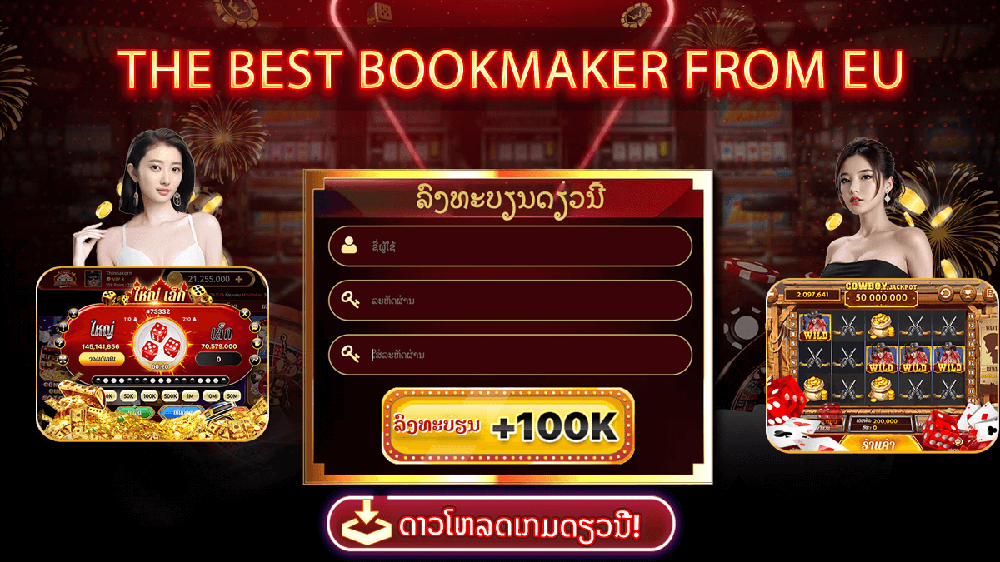

Mekong VIP - ສະມາຄົມຈາກເອີຣົບ
ພູມໃຈທີ່ໄດ້ເປັນປະຕູເກມອັນດັບຕົ້ນໆໃນຕະຫຼາດເກມອອນໄລນ໌ທຸກມື້ນີ້, Mekong VIP ສະເຫມີຊ່ວຍໃຫ້ຜູ້ຫຼິ້ນມີອາລົມທີ່ມະຫັດສະຈັນ ແລະດີເລີດທີ່ສຸດເມື່ອມີຄວາມບັນເທີງ. ໂດຍມີເງື່ອນໄຂໃນການນຳເອົາແດນຫລິ້ນມ່ວນຊື່ນແຫ່ງນີ້ມາສູ່ຜູ້ຊົມໃຊ້ Mekong VIP ເປັນບ່ອນຫຼິ້ນການພະນັນຂອງສະມາຄົມເຈົ້າມືມາຈາກເອີຣົບ, ເຊິ່ງຫາກໍ່ຕັ້ງສໍານັກງານໃຫຍ່ໃນລາວໃນປີ 2024. ເຖິງແມ່ນວ່າມັນຫາກໍ່ເປີດຕົວ ແຕ່ Mekong VIP ໄດ້ເປີດຢ່າງຍິ່ງໃຫຍ່. ເປັນທີ່ປະທັບໃຈໃຫ້ຜູ້ເຂົ້າຮ່ວມພະນັນແຫ່ງນີ້, ຜູ້ຈັດຈຳຫນ່າຍໄດ້ໃຫ້ຄໍາຫມັ້ນສັນຍາເພື່ອເນັ້ນຜົນປະໂຫຍດສໍາລັບຜູ້ຫລິ້ນ, ໂດຍມີຈຸດປະສົງເພື່ອສ້າງສະຖານທີ່ການບັນເທີງເຂັ້ມແຂງ, ຍຸຕິທໍາ, ມີຄຸນນະພາບ, ເປັນມືອາຊີບ. ນອກຈາກນັ້ນ, Mekong VIP ກໍ່ຍັງເປັນເກມທີ່ມີຊື່ສຽງທີ່ຫນ້າເຊື່ອຖືອັນດັບຕົ້ນໆທີ່ໄດ້ຮັບອະນຸຍາດດຳເນີນທຸລະກິດທາງຖືກຕ້ອງຕາມກົດໝາຍຈາກອົງການຈັດຕັ້ງ. ນີ້ສະແດງໃຫ້ເຫັນວ່າ Mekong VIP ເປັນສູນລວມເກມທີ່ມີຊື່ສຽງຢ່າງສົມບູນ, ດໍາເນີນການຢ່າງປອດໄພ, ແລະຄູ່ຄວນສໍາລັບທ່ານທີ່ຈະມີໄດ້ຮັບປະສົບການເຫຼົ່ານີ້.
- ຄາສິໂນທີ່ຫນ້າເຊື່ອຖືເປັນອັນດັບຕົ້ນໆຈາກເອີຣົບ
ເປັນຜູ້ສະຫນັບສະຫນູນທີສອງສໍາລັບທີມບານເຕະ Leeds United.
ລີດແມ່ນສະໂມສອນທີ່ມີມາແຕ່ດົນນານທີ່ເຕັມໄປດ້ວຍປະເພນີໃນການແຂ່ງຂັນທີ່ດຶງດູດທີ່ສຸດໃນໂລກພີເມຍລິກອັງກິດ
ໃນແຜ່ນດິນເກາະອັງອັງກິດ.
- Mekong Game ແລກປ່ຽນຂອງລາງວັນການພະນັນອອນໄລນ໌. ດ້ວຍຫຼາຍປະເພດເກມການພະນັນທີ່ໜ້າສົນໃຈເຊັ່ນ: ໄຮໂລ, ສູງຕ່ຳ,
ຍິງປາ, Slot
- ສູນລວມເກມອອນໄລນ໌ທີ່ມີອັດຕາສ່ວນ 1:1, ທ່ານພຽງແຕ່ມີບັນຊີບັນຊີທະນາຄານເພື່ອເຕີມເງິນ
ແລະແລກເອົາລາງວັນ.
- ການຝາກເງິນ ແລະຖອນເງິນວ່ອງໄວ, ການບໍລິການລູກຄ້າ 24ຊົ່ວໄມງ ທີ່ຈະຕອບຂໍ້ຄາໃຈແກ່ລູກຄ້າສະເຫມີ
Mekong VIP ເປັນສະຫນາມບ່ອນຫລິ້ນທີ່ມີຄວາມຫນ້າເຊື່ອຖືແທ້ບໍ?
ສາມາດຢືນຢັນໄດ້ວ່າ Mekong VIP ເປັນບ່ອນຫຼິ້ນການພະນັນທີ່ຫນ້າເຊື້ອໝັ້ນ.
Mekong VIP ເປັນປະຕູສູ່ເກມການພະນັນອອນໄລນ໌ທີ່ຮ້ອນແຮງທີ່ສຸດໃນຊ່ວງທີ່ຜ່ານມາ,
ໄດ້ຮັບການຕີລາຄາສູງຈາກຜູ້ມັກການພະນັນຫຼາຍປະເທດໃນພາກພື້ນ. ປະຈຸບັນ, Mekong VIP
ໄດ້ປະສົບຜົນສໍາເລັດຢ່າງຍິ່ງໃຫຍ່ໃນການເຂົ້າສູ່ຕະຫຼາດການພະນັນຂອງລາວ, ນຳເອົາດິນແດນແຫ່ງຄວາມບັນເທິງ ແລະ
ການພະນັນທີ່ມະຫັດສະຈັນ, ເປັນມືອາຊີບ ມາສູ່ນັກພະນັນທັງຫລາຍ.
ດ້ວຍຕໍາແໜ່ງການເປັນເຈົ້າມືທີ່ມີປະສົບການມາຫຼາຍປີໃນເອີຣົບ, ຫຼາຍຄົນຄົງຈະສົງໄສວ່າກ່ຽວກັບຄວາມເຊື່ອໝັ້ນຂອງ Mekong
VIP ເມື່ອຫລິ້ນຢູ່ນີ້ແມ່ນມີຄວາມປອດໄພແທ້ບໍ? ຂ້າງລຸ່ມນີ້ພວກເຮົາເປັນຂໍ້ມູນທີ່ໄດ້ເກັບກໍາມາ
ແລະຄັດເລືອກເພື່ອສະແດງໃຫ້ເຫັນວ່າ Mekong VIP ເປັນປະຕູສູ່ເກມທີ່ມີຄວາມຫນ້າເຊື່ອຖືໄດ້ຢ່າງແທ້ຈິງ,
ສົມຄວນທີ່ຈະລອງເຂົ້າຮ່ວມຫລິ້ນຮັບປະສົບການການພະນັນຫຼາຍທີ່ສຸດໃນມື້ນີ້.
Mekong VIP ມີກິດຈະກໍາການໂຄສະນາທີ່ມະຫາສານ
ເວັບໄຊທ໌ກິລາໃຫຍ່ເຊັ່ນ ເດີມພັນກັບເຈົ້າມືກໍມີໃຫ້ຄວາມເຊື່ອໝັ້ນກັບຜູ້ຫຼິ້ນຢູ່ສະເຫມີ. ດ້ວຍເຫດນັ້ນ, ເວັບເກມອອນໄລນ໌ຫຼາຍໆບ່ອນຈຶ່ງມາລົງໂຄສະນາຢູ່ບ່ອນນີ້ເປັນປະຈຳເພື່ອການເຂົ້າເຖິງຜູ້ຫຼິ້ນໄດ້ງ່າຍຂຶ້ນ. ແຕ່ບໍ່ແມ່ນເວັບເກມໃດກໍຈະໄດ້ຮັບການອະນຸຍາດໃຫ້ລົງໂຄສະນາເທິງເວັບໄຊທ໌ໃຫຍ່ນີ້ໄດ້.
ເທ່ານມັກຈະເຫັນໂຄສະນາຂອງ Mekong VIP ໄດ້ຢ່າງງ່າຍປາກົດຢູ່ໃນເວັບໄຊທ໌ການພະນັນໃຫຍ່ໆ. ສໍາລັບເວັບເກມທີ່ບໍ່ຮັບປະກັນຄວາມເຊື່ອຖື ຫຼືຄຸນນະພາບ, ການໂຄສະນາແມ່ນບໍ່ອະນຸຍາດໃຫ້ເກີດຂຶ້ນ. ເນື່ອງຈາກວ່ານີ້ຈະທໍາລາຍຊື່ສຽງຂອງເວັບໄຊການພະນັນ.
ເໂດຍການລົງໂຄສະນາເພື່ອໂປຣໂຫມດແບຣນຂອງ Mekong VIP ຍັງຕ້ອງການໃຫ້ປາກົດຢູ່ບັນດາເວັບໄຊທ໌ພະນັນໃຫຍ່ໆໃຫ້ຫລາຍຂື້ນ. ເອົາການບໍລິການທີ່ດີໃຫ້ຮອດມືຂອງຜູ້ໃຊ້. ແນ່ນອນ, ວ່າມັນບໍ່ໄດ້ເປັນເລື່ອງຫນ້າອາຍຫາກທ່ານຫລິ້ນໄດ້ດີ ແລະໂປ່ງໃສ, ແມ່ນບໍ? ເພາະສະນັ້ນ, ຢູ່ໃນເວັບໄຊທ໌ເຄືອຂ່າຍສັງຄົມທີ່ສໍາຄັນເຊັ່ນ: ເຟສບຸກ, Telegram, Twitter, ... ທ່ານຈະໄດ້ເຫັນການໂຄສະນາເພື່ອເຂົ້າຮ່ວມສູນລວມເກມ Mekong VIP.
ຫຼິ້ນຢູ່ Mekong VIP – ຜູ້ຫຼິ້ນໄດ້ຮັບຜົນປະໂຫຍດຫຍັງ?
ຂ້າງລຸ່ມນີ້ແມ່ນຂໍ້ດີທີ່ຈະຕອບຄໍາຖາມ: ເປັນຫຍັງຂ້ອຍຄວນເລືອກເກມMekong VIP:
- ຫນ້າຈໍພາບແນວນອນແບບເປັນມືອາຊີບ, ເຂົ້າເຖິງໄດ້ຢ່າງງ່າຍດາຍກັບທຸກຄົນ. ເປັນເອກະລັກໃນທ້ອງຕະຫຼາດ: ສູນລວມເກມ Mekong
VIP ທີ່ມີລະບົບກາຟິກຊັ້ນສູງ, ຮູບພາບ 3D ທີ່ແທ້ຈິງ ແລະລະບົບສຽງສົມຈິງ,
ໃຫ້ຜູ້ຫຼິ້ນມີຄວາມເພິ່ງພໍໃຈໃນທຸກຄວາມຮູ້ສຶກ, ສະດວກ ແລະເປັນເອກະລັກ.
- ໂປຣໂມຊັນຜ່ານລະຫັດ Mekong VIP ໄດ້ອັບເດດລະຫັດຟຣີຢ່າງຕໍ່ເນື່ອງໃຫ້ຜູ້ຫຼິ້ນທີ່ລົງທະບຽນໃໝ່
- ເກມຫຼາກຫຼາຍຊະນິດ ແລະການບໍລິການດ້ານຄວາມບັນເທີງ: ມາກັບ Mekong VIP,
ທ່ານຈະໄດ້ສຳຜັດກັບພື້ນທີ່ເກມອອນໄລນ໌ທີ່ເໝາະສົມກັບຜູ້ຫຼິ້ນທຸກເພດທຸກໄວ.
- ຫນ້າເຊື່ອຖື ແລະໂປ່ງໃສ: ທຸກກົດລະບຽບເກມ ແລະຂະບວນການຫຼິ້ນທັງໝົດແມ່ນລະບົບອອນໄລນ໌ ແລະໂປ່ງໃສ, Mekong VIP
ບອກວ່າບໍ່ມີການໂກງ.
- ຝາກເງິນ ແລະຖອນເງິນວ່ອງໄວ, ອັດຕາສ່ວນ 1: 1 ຢ່າງໄສສະອາດ:
ອັດຕາສ່ວນເດີມພັນຜູກໝັດກັບມູນຄ່າກໍາໄລທີ່ຜູ້ຫລິ້ນຈະໄດ້ຮັບໃນເວລາທີ່ເຂົ້າຫລິ້ນ. ການເຮັດທຸລະກຳເງິນຝາກ ແລະ
ຖອນເງິນທັງໝົດຢູ່ Mekong VIP ແມ່ນເປີດເປັນສາທາລະນະ ແລະ ໂປ່ງໃສ.
- ທີມງານດູແລລູກຄ້າແບບມືອາຊີບ, ສະຫນັບສະຫນູນ 24/7: ໂດຍຈຸດປະສົງແມ່ນເພື່ອ ""ປະສົບການຂອງລູກຄ້າຕ້ອງມາກ່ອນ"",
ສະນັ້ນ Mekong VIP,
ພວກເຮົາໄດ້ຝຶກອົບຮົມທີມງານສະຫນັບສະຫນູນຢ່າງເອົາໃຈໃສ່ເພື່ອສະຫນັບສະຫນູນຜູ້ໃຊ້ໃຫ້ໄດ້ໄວທີ່ສຸດ.
- ຄົນແທ້ແຈກໄພ່: ຄົນແທ້ແຈກໄພ່ແມ່ນມີຢູ່ແຕ່ພຽງ Mekong VIP, ຮັບປະກັນຄວາມຍຸຕິທໍາທີ່ສຸດລະຫວ່າງຜູ້ຫລິ້ນ.
- ລະບົບຄວາມປອດໄພສູງສຸດ, ບໍ່ເກັບຂໍ້ມູນລູກຄ້າ: Mekong VIP ມີລະບົບຄວາມປອດໄພທີ່ທັນສະໄໝທີ່ສຸດໃນປະຈຸບັນ,
ມີການເຂົ້າລະຫັດຂໍ້ມູນທີ່ດີເລີດ. ຮັບປະກັນ 100% ຂໍ້ມູນຜູ້ຫລິ້ນ.
ຄັງເກມຂະໜາດໃຫຍ່ຢູ່ທີ່ Mekong VIP
ເວົ້າກ່ຽວກັບຄັງເກມ Mekong VIP, ເມື່ອເຂົ້າສູ່ລະບົບ, ຜູ້ຫຼິ້ນສາມາດເຫັນໄດ້ວ່າມີເກມນັບບໍ່ຖ້ວນຂອງທຸກປະເພດ. ເກມຂອງ
Mekong VIP ແມ່ນມີຄຸນນະພາບສູງທີ່ສຸດ ດ້ວຍອັດຕາລາງວັນທີ່ຖືວ່າຂ້ອນຂ້າງສູງ.

MINI Game
ປະເພດ Mini Game ຂອງ Mekong VIP ກັບປະເພດເກມງ່າຍໆເຊັ່ນ: ໄຮໂລ, ເສືອມັງກອນ, ນົກຟີນິກເກີດໃໝ່, ປູປານ້ຳເຕົ້າ. ນີ້ແມ່ນຊຸດເກມທີ່ມີຈັງຫວະທີ່ສູງເກີດຂື້ນຢ່າງຕໍ່ເນື່ອງ, ຜູ້ຫຼິ້ນສາມາດເຂົ້າຮ່ວມການຫຼີ້ນ Mini Game ໄດ້ຕະຫຼອດເວລາ. ດ້ວຍອັດຕາລາງວັນທີ່ດີພໍສົມຄວນ ແລະ Jackpot ທີ່ໜ້າສົນໃຈຫຼາຍ, Mini Game ເປັນທາງເລືອກທີ່ບໍ່ຄວນພາດເມື່ອຫຼີ້ນຢູ່ Mekong VIP.
ເກມສະລັອດ
ມາສູ່ເກມ Mekong VIP , Game Slot ແມ່ນເກມທີ່ທ່ານເລືອກທຳອິດ. ໃນປີ 2022, 50% ຂອງຜູ້ຫລິ້ນເຂົ້າມາໃນ Mekong VIP ຜ່ານຄໍາຊັບທີ່ວ່າ ""ເກມສະລັອດ"", ມັນສະແດງໃຫ້ເຫັນວ່າ, ເກມລ່າແຈັກພັອດຢູ່ໃນ Mekong VIP ແມ່ນເກມນີ້ທີ່ດຶງດູດຜູ້ຫລິ້ນເປັນຕົ້ນຕໍໃນປີກາຍນີ້. ດ້ວຍເກມ: ເທບພະເຈົ້າ, Slot 777, ຄາວບອຍ, ສາມກະສັດ, ມັງກອນພາເຣດ, ຟາໂຣ, Angry Birds, Mini Poker.... ບັນຍາກາດທີ່ຄຶກຄັກພ້ອມກັບຮອບຫມຸນແຈັກພັອດທີ່ຈະນຳມາໃຫ້ທ່ານໄດ້ຫລິ້ນເພິດເພີນກັບຫານເດີມພັນທີ່ຫນ້າສົນໃຈທີ່ສຸດ. ບໍ່ພຽງແຕ່ເທົ່ານັ້ນ, ທ່ານຍັງສາມາດໄດ້ຮັບລາງວັນອັນມະຫັດສະຈັນກັບຫມຸນທີ່ບໍ່ສິ້ນສຸດກັບເກມສະລັອດ.
ປະເພດເກມອື່ນໆ
ສິ່ງທີ່ເຮັດໃຫ້ Mekong VIP ພັດທະນາຢ່າງກ້ວາງຂວາງໃນຕະຫຼາດເອເຊຍນັ້ນກໍ່ແມ່ນໃນ Mekong VIP ສາມາດລົງເດີມພັນກິລາ
ແລະຫຼິ້ນຄາສິໂນແບບສົດກັບຄົນແທ້ທີ່ຢາຍໄພ່. ອີກຫນຶ່ງທີ່ໜ້າປະຫລາດໃຈຫຼາຍແມ່ນມາຈາກ Mekong VIP.
ເນື່ອງຈາກວ່າໃນປັດຈຸບັນຍັງບໍ່ມີເວັບເກມໃດທີ່ສາມາດປະສົມປະສານການພະນັນໄດ້ຢ່າງສົມບູນແບບຄືກັບ Mekong VIP.
Mekong VIP ມີເກມທີ່ຫຼາກຫຼາຍຄື: ສັ່ນລູກເຕົ໋າ, ປູປານ້ຳເຕົ້າ, ໄຮໂລ, ກິລາ, ຫວຍ, Casino ອອນໄລນ໌, ຍິງປາ.
ທ່ານໄດ້ເຫັນຈຸດທີ່ມີຄຸນນະພາບຂອງ Mekong VIP ແລ້ວບໍ? ຍັງບໍ່ທັນຫມົດເທື່ອ, ນີ້ແມ່ນເປັນພຽງແຕ່ຂໍ້ມູນສັ້ນໆກ່ຽວກັບ
Mekong VIP ເທົ່ານັ້ນ. ລົງທະບຽນເພື່ອຫລິ້ນກບ Mekong VIP, ຊະນະລາງວັນໃຫຍ່ຂອງ Mekong VIP
ນັ້ນຈຶ່ງແມ່ນການຫລິ້ນການພະນັນທີ່ສຸດຍອດ.
ທະນາຄານທີ່ສະໜັບສະໜູນການຖອນເງິນໃຫ້ກັບ Mekong VIP
ດ້ວຍທະນາຄານຄູ່ຮ່ວມງານ, Mekong VIP ຊ່ວຍໃຫ້ຜູ້ຫຼິ້ນຖອນເງິນເຂົ້າບັນຊີທະນາຄານສ່ວນຕົວຂອງຕົນເອງໄດ້ຢ່າງວ່ອງໄວ.
ດ້ວຍຮູບແບບທີ່ງ່າຍດາຍທີ່ສຸດ ແລະເຮັດໄດ້ງ່າຍ, ຜູ້ຫຼິ້ນແມ່ນມີຄວາມປອດໄພໃນເວລາຫຼິ້ນກັບ Mekong
VIP. ທຸກຮູບແບບຂອງການຖອນເງິນຢູ່ Mekong VIP ແມ່ນບໍ່ເສຍຄ່າທຳນຽມ, ຂໍ້ມູນສ່ວນຕົວ
ແລະຊັບສິນທຸກຢ່າງຂອງທ່ານແມ່ນເປັນຄວາມລັບຢູ່ທີ່ Mekong VIP.
ໃນປັດຈຸບັນ, ທ່ານສາມາດຖອນເງິນຈາກການຫລິ້ນຊະນະຂອງທ່ານກັບບັນຊີທະນາຄານດັ່ງຕໍ່ໄປນີ້:ຖາມ-ຕອບ
ກ່ຽວກັບການຖອນເງິນ Mekong VIP
Mekong VIP ບໍ່ສາມາດຖອນເງິນໄດ້ - ສາເຫດ ແລະ ວິທີແກ້ໄຂ?
ເຖິງແມ່ນວ່າລະບົບເງິນຝາກ ແລະຖອນເງິນໄດ້ຖືກປັບປຸງຢ່າງເປັນມືອາຊີບ. ແຕ່ແນວໃດກໍ່ຕາມ, ກໍ່ຍັງມີບາງກໍລະນີທີ່ບໍ່ສາມາດຝາກ ຫລືຖອນເງິນໄດ້ກັບ Mekong VIP. ມັນອາດຈະເປັນຍ້ອນວ່າບັນຊີຂອງທ່ານບໍ່ມີເງິນພຽງພໍ, ມັນອາດຈະເປັນຍ້ອນການບໍາລຸງຮັກສາຂອງຜູ້ຈຳຫນ່າຍເກມ, ມັນອາດຈະເປັນຍ້ອນການບໍາລຸງຮັກສາຂອງທະນາຄານທີ່ທ່ານຖອນເງິນອອກ, ...
ໃນກໍລະນີເຊັ່ນນີ້, ທ່ານຄວນຕິດຕໍ່ສາຍດ່ວນ Mekong VIP ເພື່ອການຕອບຊ່ວຍທີ່ໄວທີ່ສຸດ. ປົກກະຕິແລ້ວຄວາມຜິດພາດເຫຼົ່ານີ້ບໍ່ເກີດຂຶ້ນ, ແຕ່ຖ້າມີບັນຫາໃດໆ, ທ່ານຄວນຕິດຕໍ່ກັບສາຍດ່ວນ Mekong VIP ເພື່ອຮັກສາບັນຊີຂອງທ່ານໃຫ້ປອດໄພຈາກການຖືກ hack ຫຼື ເງິນຖືກລັກຈາກໂຈນ.
ການຖອນເງິນຈາກ Mekong VIP ໃຊ້ເວລາດົນ – ສາເຫດ ແລະວິທີແກ້ໄຂບັນຫາ? ນອກຈາກກໍລະນີທີ່ບໍ່ສາມາດຖອນເງິນໄດ້ແລ້ວ, ກໍລະນີຖອນເງິນໃນໄລຍະຍາວກໍ່ເປັນບັນຫາທີ່ເຮັດໃຫ້ຜູ້ຫຼິ້ນບໍ່ສະດວກ. ກໍລະນີເງິນມາຊ້າຫຼາຍແມ່ນບໍ່ຄ່ອຍເກີດຂຶ້ນ, ແຕ່ສາເຫດຂອງເຫດການເຫຼົ່ານີ້ແມ່ນເກີດຂຶ້ນໄດ້ງ່າຍ.
ການຖອນເງິນຈາກ Mekong VIP ໃຊ້ເວລາດົນ ເພາະເຈົ້າຖອນເງິນຫຼັງ 18:00 ໂມງແລງ ຫຼື ທ້າຍອາທິດ. ນີ້ບໍ່ແມ່ນບັນຫາຫຍັງຂອງ Mekong VIP, ຜູ້ຫຼິ້ນ ຫຼື ທະນາຄານ, ນີ້ແມ່ນເນື່ອງຈາກວ່າທຸລະກໍາເຫຼົ່ານີ້ແມ່ນຢູ່ນອກເວລາເຮັດວຽກຂອງທະນາຄານ.
ບາງຄັ້ງການຖອນເງິນຊ້າກໍ່ເປັນຍ້ອນການບຳລຸງຮັກສາຂອງທະນາຄານ ຫຼື ການບຳລຸງຮັກສາຂອງລະບົບ Mekong VIP. ຖ້າມັນເປັນບັນຫາເວລາການເຮັດທຸລະກໍາ, ທ່ານຄວນລໍຖ້າຈົນກ່ວາທະນາຄານເປີດຄືນສໍາລັບເງິນທີ່ຖອນ ແມ່ນຈຶ່ງຈະເຂົ້າບັນຊີຂອງທ່ານ. ແລະຕາມເຄີຍ, ຖ້າມີເຫດການທີ່ເກີດຂຶ້ນຢູ່ Mekong VIP, ຄວນຕິດຕໍ່ສາຍດ່ວນເພື່ອຮັບຄຳຕອບໂດຍໄວທີ່ສຸດ, ຫຼີກລ່ຽງກໍລະນີທີ່ບໍ່ສາມາດແກ້ໄຂໄດ້ທັນການຈົນເຮັດໃຫ້ເກີດການສູນເສຍ.